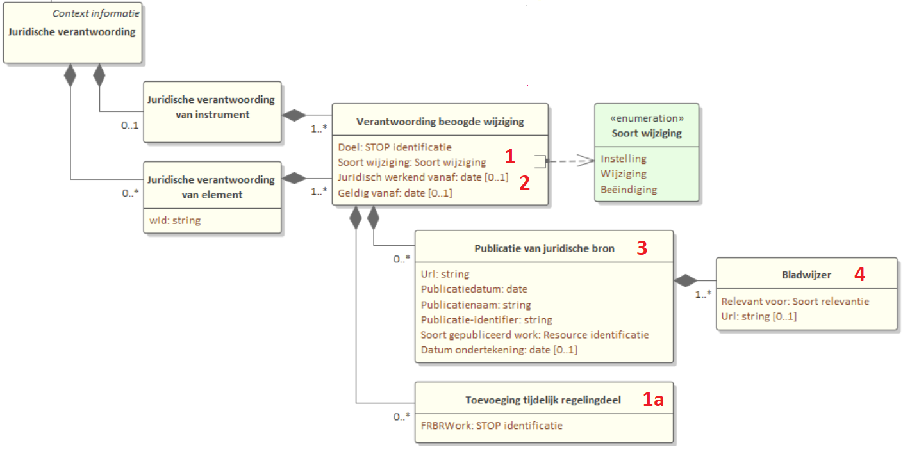
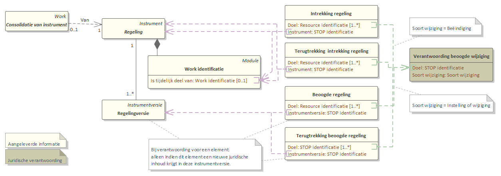
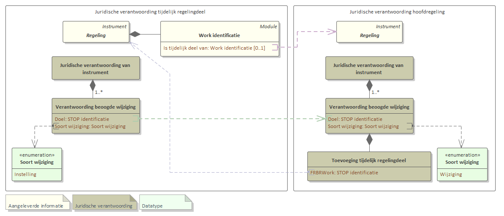
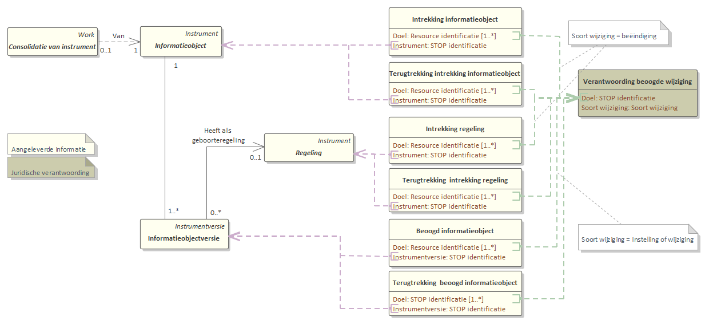
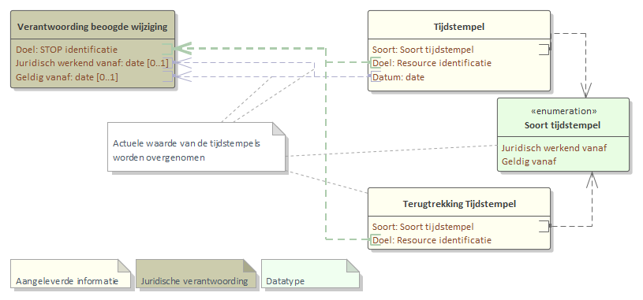
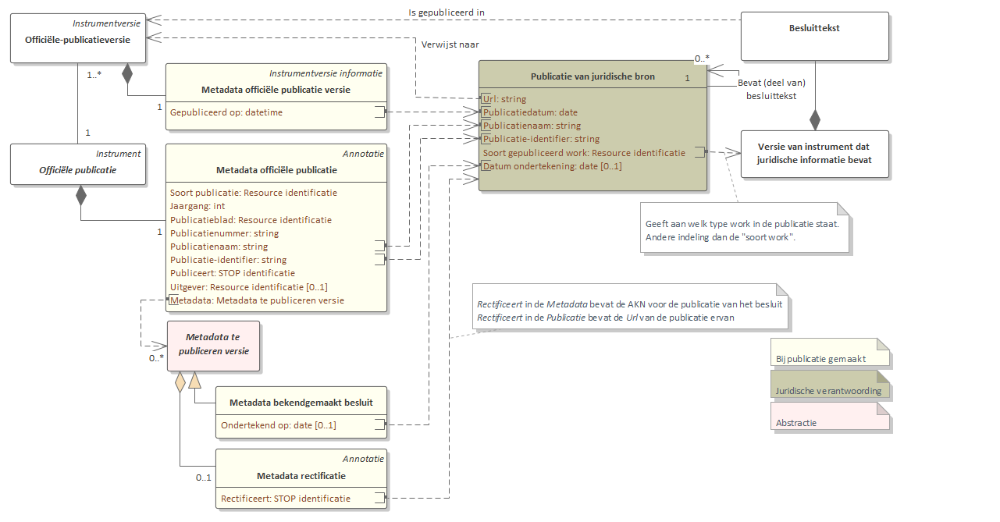
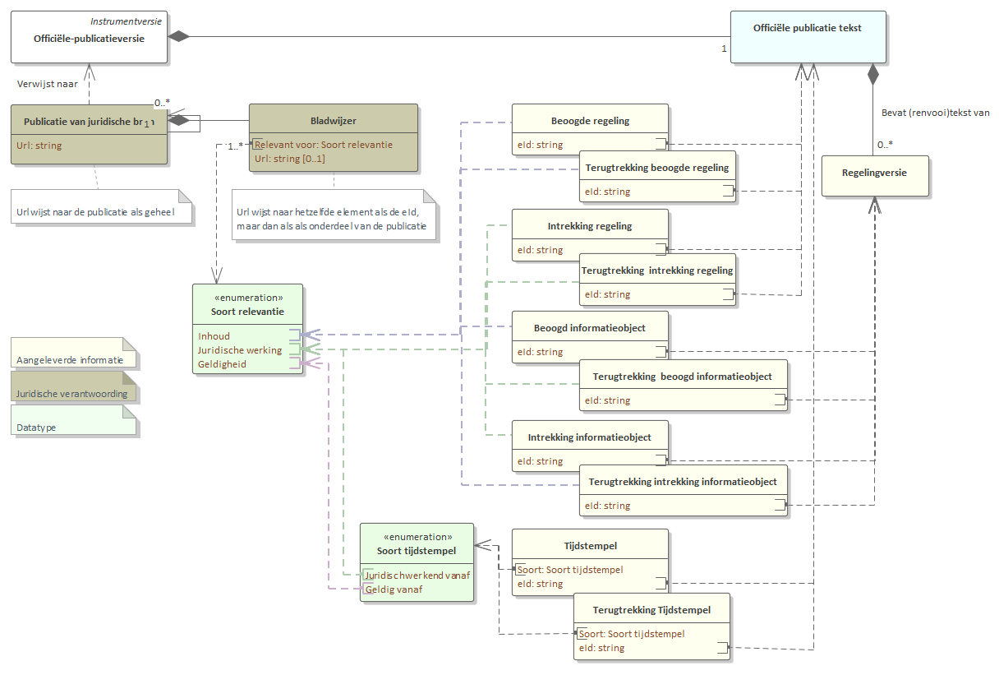

Bepaling juridische verantwoording
Afleiding van de juridische verantwoording
De juridische verantwoording beschrijft waar de juridische bronnen voor een geconsolideerde regeling of geconsolideerd informatieobject gepubliceerd zijn. Het is een overzicht van publicaties dat grotendeels afgeleid wordt uit de consolidatie-informatie zoals die bij instrumenten als besluiten is aangeleverd. Voor een geconsolideerde regeling is de juridische verantwoording zowel voor de gehele regeling als voor een muteerbaar tekstelement beschikbaar, voor een geconsolideerd informatieobject alleen voor het gehele informatieobject.
De juridische verantwoording is een context module waarin alle publicaties gedaan tot en met de datum Bekend op staan zoals het STOP-gebruikend systeem die kent op de datum Ontvangen op. De afleiding van de juridische verantwoording verloopt in een aantal stappen:
Selectie van de wijzigingen die in het overzicht opgenomen moeten worden. Twee varianten:
voor een geconsolideerde regeling of regeltekst;
voor een geconsolideerde informatieobject.
Selectie van de bijbehorende tijdstempels.
Opstellen van de Publicatie van de juridische verantwoording.
Toevoegen van Bladwijzers.
Bepalen van de tijdstempels van de context mdule.

1 - Selectie van de wijzigingen
In de juridische verantwoording worden de bron-publicaties gegroepeerd per doel. De gedachte daarbij is dat een doel staat voor één wijziging van de regelgeving, en alle publicaties waarin iets over hetzelfde doel staat samen die wijziging beschrijven; zie ook Verantwoording beoogde wijziging (entiteit).
De eerste stap is te bepalen voor welke doelen er publicaties opgenomen moeten worden, en welke publicaties dat dan zijn.
Wijzigingen van een regeling of regeltekst
In de juridische verantwoording van een geconsolideerde regeling, moeten alle publicaties worden genoemd die wijzigingen aangebracht hebben in die regeling. Publicaties die regelingen wijzigen zijn besluiten, maar kunnen bijvoorbeeld ook rectificaties of rechterlijke uitspraken zijn. Bij een publicatie wordt consolidatie-informatie meegeleverd. De consolidatie-informatie geeft aan welke regelingen beoogd worden met de publicatie te wijzigen. Voor de juridische verantwoording van een geconsolideerde regeling moet dus de consolidatie-informatie van alle publicaties die betrekking hebben op betreffende regeling bekeken worden.
De consolidatie-informatie van een publicatie bevat, naast een verwijzing naar de beoogde regeling, een overzicht van doelen (inwerkingtreding-momenten van de wijzigingen). Eén publicatie kan meerdere doelen hebben. Voor de juridische verantwoording van de geconsolideerde regeling wordt een lijst gemaakt van alle doelen uit de consolidatie-informatie van alle publicaties die betrekking hebben op betreffende regeling.
Per doel wordt een Verantwoording beoogde wijziging aangemaakt. Deze geeft het soort wijziging aan, waartoe de publicatie heeft geleid: Instelling, Wijziging of Beëindiging.
Kortom, uit de consolidatie-informatie van alle publicaties die betrekking hebben op de geconsolideerde regeling wordt per doel een nieuwe Verantwoording beoogde wijziging aangemaakt en als volgt gevuld:
als voor de regeling een regelingversie als beoogde regeling wordt aangewezen;
de
Soort wijzigingisInstellingals de volledige tekst van de regelingversie in het instrument staat, enWijzigingals de regelingversie in renvooi staat. Als er bij hetzelfde doel zowel eenInstellingals eenWijziginghoren, dan is deSoort wijziginggelijk aanInstelling.als de regeling wordt ingetrokken;
de
Soort wijzigingis danBeëindiging.als de regeling een tijdelijk regelingdeel is en de hoofdregeling wordt ingetrokken;
de
Soort wijzigingis danBeëindiging.
De Soort wijziging blijft gelijk als op een later tijdstip een aanwijzing van een beoogde regeling of een intrekking wordt teruggetrokken.

Als de juridische verantwoording wordt opgesteld voor een muteerbaar tekstelement in de regeling, dan gelden vergelijkbare criteria. Er wordt uit de consolidatie-informatie van alle publicaties die betrekking hebben op de geconsolideerde regeling, voor elk muteerbaar tekstelement in de geconsolideerde regeling, per doel een nieuwe Verantwoording beoogde wijziging aangemaakt en als volgt gevuld:
als voor de regeling een regelingversie als beoogde regeling wordt aangewezen en de juridische inhoud wijzigt van het tekstelement:
de
Soort wijzigingisInstellingals het tekstelement voor het eerst voorkomt in de regelingversie:expliciet via een
voegtoevan het element;impliciet als onderdeel van de volledige tekst van de regelingversie;
impliciet als onderdeel van een
voegtoeofvervangvan een structuurelement waar het tekstelement onderdeel van uitmaakt.
de
Soort wijzigingisWijzigingals het element gewijzigd wordt:expliciet via een
vervangvan het element;impliciet omdat het in renvooi staat in een
vervangvan structuurelement waar het tekstelement onderdeel van uitmaakt.
de
Soort wijzigingisBeëindigingals het element verwijderd wordt:expliciet via
verwijdervan het element;impliciet via een
verwijdervan een structuurelement waar het element onderdeel van is;impliciet als een element gewijzigd wordt en als nieuwe inhoud Vervallen krijgt.
als de regeling wordt ingetrokken; de
Soort wijzigingis danBeëindigingvoor elk tekstelement.als de regeling een tijdelijk regelingdeel is en de hoofdregeling wordt ingetrokken; de
Soort wijzigingis danBeëindigingvoor elk tekstelement.als er bij hetzelfde doel zowel een
Instellingals eenWijzigingen/ofBeëindiginghoren, dan is deSoort wijziginggelijk aanInstelling.
De Soort wijziging blijft gelijk als op een later tijdstip een aanwijzing van een beoogde regeling of een intrekking wordt teruggetrokken.
1a - Tijdelijk regelingdeel
Als de regeling de hoofdregeling is voor een tijdelijk regelingdeel, dan wordt de instelling van een nieuw tijdelijk regelingdeel in de juridische verantwoording van zowel het tijdelijk regelingdeel als van de hoofdregeling opgenomen. In het tijdelijk regelingdeel zelf is soort wijziging dan instelling , maar in de hoofdregeling wordt het met Soort wijziging is Wijziging opgenomen. De reden is dat juridisch gezien het tijdelijk regelingdeel één geheel vormt met de hoofdregeling, en de hoofdregeling dus wijzigt als er een tijdelijk regelingdeel ingesteld wordt. De juridische verantwoording van de hoofdregeling wordt onoverzichtelijk als elke wijziging van een tijdelijk regelingdeel ook bij de hoofdregeling vermeld wordt. Daarom wordt alleen de instelling van het tijdelijk regelingdeel opgenomen; een belangstellende kan de juridische verantwoording van het tijdelijk regelingdeel zelf raadplegen voor informatie over de wijziging en beëindiging daarvan. De presentatie van de juridische verantwoording zou de belangstellende daarover moeten informeren.

De instelling van een tijdelijk regelingdeel wordt niet opgenomen in de juridische verantwoording van een tekstelement van de hoofdregeling.
Wijzigingen van een informatieobject
Voor de juridische verantwoording van een geconsolideerd informatieobject worden alle publicaties vermeld van een instrumentversie (zoals een versie van een besluit of een rectificatie) waarvoor consolidatie-informatie wordt meegeleverd of gewijzigd, voor zover de consolidatie-informatie betrekking heeft op het informatieobject. Er wordt per doel een nieuwe Verantwoording beoogde wijziging aangemaakt:
als voor het informatieobject een informatieobjectversie als beoogd informatieobject wordt aangewezen;
de
Soort wijzigingisInstellingals het informatieobject nog niet eerder is gebruikt in een regeling, anders is hetWijziging. Als er bij hetzelfde doel zowel eenInstellingals eenWijziginghoren, dan is deSoort wijziginggelijk aanInstelling.als het informatieobject wordt ingetrokken;
de
Soort wijzigingis danBeëindiging.als de geboorteregeling van een informatieobjectversie wordt ingetrokken;
de
Soort wijzigingis danBeëindigingals daardoor alle informatieobjectversies worden ingetrokken, enWijzigingals er informatieobjectversies zijn die een andere geboorteregeling hebben.
De Soort wijziging blijft gelijk als op een later tijdstip een aanwijzing van een beoogd informatieobject of een intrekking wordt teruggetrokken.

2 - Selectie van de bijbehorende tijdstempels
Nu alle doelen uit alle relevante publicaties zijn opgenomen in een Verantwoording beoogde wijziging en voorzien zijn van een soort wijziging, komt de volgende stap. Voor alle doelen waarvoor de datum inwerkingtreding en datum geldig vanaf bekend zijn, moet deze toegevoegd worden aan de Verantwoording beoogde wijziging. De tijdstempel uit de consolidatie-informatie is voor deze informatie de bron.
Alleen de actuele waarde van de tijdstempel wordt aan de Verantwoording beoogde wijziging toegevoegd. De actuele waarde is de waarde die juridisch volgt uit de opeenvolging van het besluit waarin de tijdstempel als eerste vermeld is en eventuele rectificaties of bijstellingen door (rechterlijke) besluiten:
Zoek alle modules met consolidatie-informatie op waarin iets over de tijdstempel bij het doel (via Tijdstempel of TerugtrekkingTijdstempel) vermeld staat. Als een module via een directe mutatie is vervangen, dan wordt daarvoor de laatst aangeleverde versie gebruikt.
Zet alle modules met consolidatie-informatie op volgorde van aflopende datum waarop het bijbehorende instrument gepubliceerd is (de tijdreisparameter bekendOp).
De eerste module in deze rij bevat de juiste informatie:
Als er geen modules zijn met de tijdstempel of de eerste module in de rij bevat een
TerugtrekkingTijdstempel, dan is de actuele waarde onbekend.Als de eerste module een
Tijdstempelheeft, dan is de daarin vermelde datum de actuele waarde.

3 - Opstellen van de publicatie van juridische bron
Op dit punt in de afleiding is een selectie gemaakt van de relevante publicaties en zijn instanties van Verantwoording beoogde wijziging aangemaakt. In de juridische verantwoording worden van de relevante publicaties een aantal gegevens opgenomen in Publicatie van juridische bron. Voor elke combinatie van een publicatie en doel wordt één Publicatie van juridische bron aangemaakt, die aan de Verantwoording beoogde wijziging van het betreffende doel gekoppeld wordt. De informatie in de Publicatie van juridische bron is afkomstig uit de metadata van de betreffende (officiële) publicatie. In onderstaand plaatje is aangegeven waar de benodigde informatie voor de Publicatie van juridische bron gevonden kan worden.

4 - Toevoegen van bladwijzers
Een publicatie, zoals een besluit, bevat vaak grote hoeveelheden tekst. Hierdoor is een verwijzing naar de publicatie alleen onvoldoende om eenvoudig het gedeelte van de publicatie te vinden wat over een specifieke wijziging gaat. Om de verwijzingen specifieker te maken, worden aan de Publicatie van juridische bron bladwijzers toegevoegd. De consolidatie-informatie waaruit de Verantwoording beoogde wijziging is afgeleid, bevat namelijk ook eId verwijzingen naar de specifieke tekst.
Voor elke geselecteerde wijziging en bijbehorende tijdstempels in de Verantwoording beoogde wijziging wordt een bladwijzer gemaakt. Per bladwijzer wordt aangegeven waar de tekst betrekking op heeft: Soort relevantie. Met de Soort relevantie wordt vastgelegd of de bladwijzer wijst naar een beschrijving van de wijziging van de regeling of het informatieobject (Inhoud), of dat het gaat om de plaats in de tekst waar een tijdstempel staat (Juridische werking, of Geldigheid). In onderstaand plaatje is aangegeven hoe de Soort relevantie afgeleid kan worden uit de consolidatie-informatie.
In principe correspondeert één element uit de consolidatie-informatie met één bladwijzer. Als er meerdere bladwijzers zijn met dezelfde Soort relevantie en Url, dan hoeft er maar één van behouden te worden. De bladwijzers worden dus ontdubbeld.

De Publicatie van juridische bron heeft als Url het internet adres van de (officiële) publicatie. Een bladwijzer verwijst met de Url naar de tekst uit de gepubliceerde instrumentversie (zoals een besluit). De Url van de bladwijzer kan worden bepaald aan de hand van de eid in de instrumentversie zoals in de consolidatie-informatie is meegegeven. Die eId verwijst naar een positie in de tekst van de instrumentversie. Aangezien de instrumentversie integraal onderdeel is van de officiële publicatie, is het ook het eid van de overeenkomstige positie in de publicatie. Met andere woorden: de Url van de bladwijzer is een combinatie van de Url van de publicatie plus de eId zoals in de consolidatie-informatie is vermeld.
5 - Tijdstempels van de context module
De juridische verantwoording wordt uitgewisseld als een context module en heeft daarom een of twee tijdstempels die iets zeggen over de actualiteit van de informatie.
De datum bekendOp geeft aan waarop de informatie voor het eerst bekend werd. De informatie die in de juridische verantwoording besloten ligt is: welke publicaties liggen ten grondslag aan de geconsolideerde regeling. De bekendOp datum is daarom gelijk aan de datum van de meest recente publicatie.
De optionele datum ontvangenOp geeft het moment aan waarop het systeem dat de STOP module uitlevert voor het eerst over de informatie beschikte, dus voor het eerst kennis had van alle publicaties die voor de juridische verantwoording gebruikt zijn. De datum is gelijk aan de datum van ontvangst van de meest recente publicatie.
Voor de LVBB en het systeem van het bevoegd gezag zijn de bekendOp en ontvangenOp datum gelijk waar het gaat om een publicatie die door het bevoegd gezag wordt gedaan. De datum wijkt alleen af als het een beslissing van een ander dan het bevoegd gezag betreft (zoals van een rechter), waarvan het bevoegd gezag later een kennisgeving via de LVBB publiceert. Bij de bepaling van bekendOp moet de datum gebruikt worden waarop de beslissing van de ander publiek geworden is. De LVBB hanteert bij de bepaling van ontvangenOp de datum van publicatie van de kennisgeving door LVBB.
Voor de LVBB wijken de datums ook af bij een publicatie die in eerste instantie buiten het publicatieblad van het bevoegd gezag is gedaan, en later bij de LVBB bekend is geworden. Bij de bepaling van bekendOp voor deze publicatie is de datum van de originele publicatie, bij de bepaling van ontvangenOp de datum van ontvangst door LVBB.